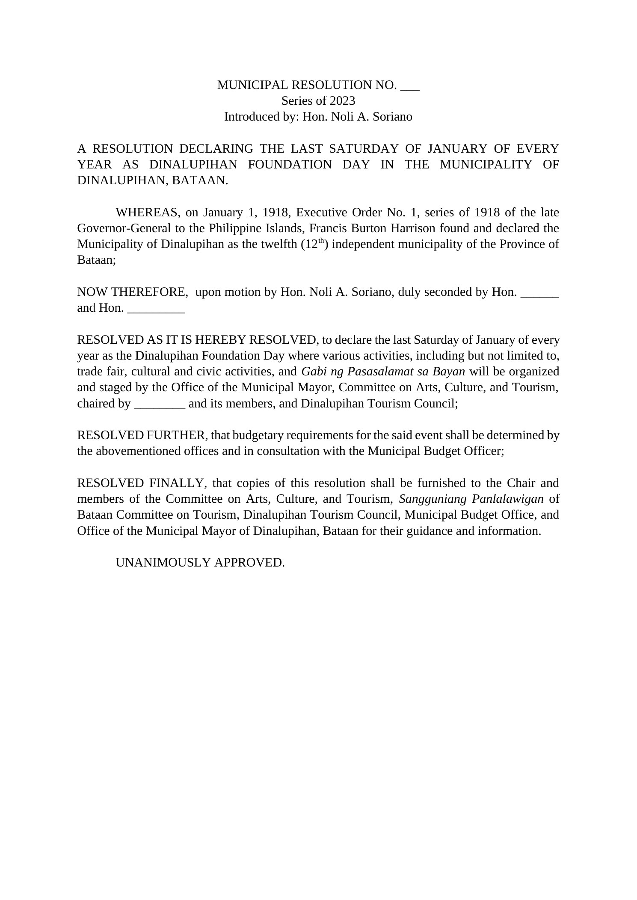

Renaissance · Research & Public Conversation · Case
Legislation, Evidence, and Local Memory
A workshop on local legislation began as an exercise in drafting. Years later, it became a much larger lesson: public memory should be respected, but it should also remain open to evidence.
Engagement record
The experience at a glance.
- Engagement
- Introduction to Excellence in Local Legislation
- Institution
- UP NCPAG Center for Local and Regional Governance
- Period
- 2022 onward
- Course dates
- July 11 to 15, 2022
- Professional context
- Executive Assistant in a political office
- Capstone
- Draft Dinalupihan Municipal Library Ordinance
- Later application
- Research and legislative drafting for Municipal Councilor Noli Austria Soriano
Why this case matters
Legislative work taught me that evidence can be a form of dissent.
In July 2022, I completed the Introduction to Excellence in Local Legislation course of the University of the Philippines National College of Public Administration and Governance's Center for Local and Regional Governance.
Many of my classmates were elected local officials. I entered the course from a different position: I was working as an Executive Assistant in a political office, close enough to local government to see how legislation moved, but still learning how to build it myself.
The workshop made legislation feel less like political language and more like a discipline. A proposal needed a public problem, evidence, a legal basis, implementation details, funding, and a clear account of what the institution would actually do.
Documentary record
Learning the craft of local legislation.
The course ran from July 11 to 15, 2022. Its capstone required me to move from an idea to the structure of a local legislative measure.

The maiden draft
My first ordinance draft was really about access to knowledge and memory.
For the course capstone, I drafted a measure establishing and funding a Dinalupihan Municipal Library.
The proposal responded to literacy and access to information, but I also wanted the library to function as a repository of the town's cultural and historical memory. The draft included a Dinalupiheño section for local history, culture, images, and ordinances, alongside provisions for archives and the preservation of public records.
It was only a capstone draft, not an enacted ordinance. But the exercise left an idea with me: local legislation does more than regulate conduct or allocate money. It can also decide what a community preserves, remembers, and makes available for the next person who asks a question.
Years later
What happens when the record does not match the story everyone knows?
Years later, that question became practical. I researched and wrote the Municipal Resolution introduced by Municipal Councilor Noli A. Soriano declaring the last Saturday of January of every year as Dinalupihan Foundation Day. The work also carried a personal continuity for me: years earlier, he had been my senior high school teacher in Communication.
The resolution cited January 1, 1918 and Executive Order No. 1, series of 1918 as the documentary basis for Dinalupihan's status as an independent municipality. That record sat beside a different public tradition: the long association of June 24, the Solemnity of the Birth of St. John the Baptist, with the town's civic celebration.
Historical scrutiny therefore forced a distinction between a patronal feast and the documentary basis used for a civic founding anniversary.
That can feel like dissent. A familiar story becomes part of identity, and questioning it can sound like questioning the community itself. But historical evidence does not become less important because an older version has been repeated for a long time.
The experience made me think about local identity differently. Attention to history is not an attempt to weaken tradition. Done carefully, it is an attempt to understand what belongs to faith, what belongs to civic history, and what the available record can actually support.
Supporting record
The Foundation Day resolution draft.
This draft records the legislative language I prepared for Municipal Councilor Noli A. Soriano, including the January 1, 1918 historical basis used for the proposed annual Foundation Day commemoration.

Research and public conversation
Accepted truth should not become immune to scrutiny.
Public memory has weight because people carry it together. That makes changing a historical claim very different from correcting a typo. It touches rituals, stories, institutions, and the way people explain where they come from.
But collective acceptance is not the same thing as documentary proof. Research asks us to slow down, look at the record, compare sources, and be willing to revise what we thought we knew.
Public conversation matters because evidence still has to be interpreted by a community. The task is not to announce that everyone before us was wrong. It is to make the evidence visible enough that people can see why another account deserves attention.
That is where legislation becomes part of the conversation. A measure can formalize what research has uncovered, but it also makes that interpretation answerable to public institutions and public scrutiny.
Renaissance
Sometimes renewal begins by looking again at what everyone already thinks they know.
Renaissance did not mean rejecting Dinalupihan's traditions. It meant giving those traditions enough respect to distinguish memory, faith, historical evidence, and civic identity from one another.
Looking closely at the record may resemble dissent when a public belief is deeply familiar. But if evidence is available, attention and scrutiny are part of the responsibility of understanding who we are.
What I carry forward
A law can preserve memory. Research can also ask whether that memory is accurate.
The municipal-library capstone and the later founding-anniversary work now feel connected to me.
The first taught me to imagine an institution that could preserve local records and make knowledge accessible. The second showed me why that preservation matters. Without records, communities can inherit stories without the means to examine them.
Legislative drafting gave the research somewhere to go. Research gave the resolution a reason to exist. There was also something quietly circular about writing it for someone who had once taught me how to communicate: years later, communication had become part of the work of turning historical evidence into language that a public institution could examine, debate, and act on.
That is the Renaissance I see in this work: not change for the sake of being different, but the willingness to revisit an accepted account when evidence gives the community a reason to look again.
Creativity → Renaissance
Return to the wider engagement.
Explore Research & Public Conversation for more cases about inquiry, evidence, interpretation, exchange, and what happens when accepted ideas are given serious scrutiny.
Research & Public Conversation →